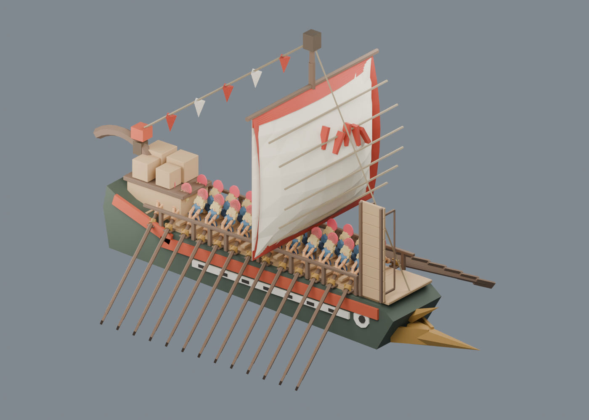
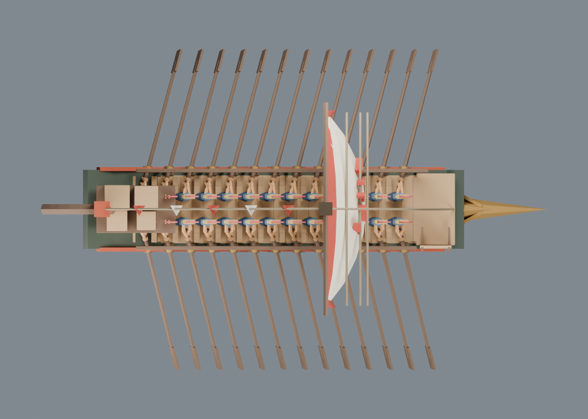

战船v2：同舷同步已保存，正式回接另行验证
301保存帧相邻桨互碰：v1为36帧 → v2为0。原几何、26桨与26独立桨手均保留；所有890个网格局部顶点与v1完全一致。
901内存样本=181原启停+720四档速度周期状态；301保存帧=同181启停+120登船部署/回收。两组覆盖不混算。旧柄点/身体/甲板/舷缘/座板检查均保留通过。未做25人调度、麻醉战损姿态、舰队性能或正式运行时接入。

真实新GLB回读后应用第51帧局部姿态：同舷13桨合拍，左右原0.11差保留。
同一真实GLB顶视：26宽桨叶和间距保留，无相邻互碰。GLB文件默认存静态第1帧，301帧动作在Blend和assembly。源与同步轨迹研究 · 完整说明/命令 · 最终文件哈希